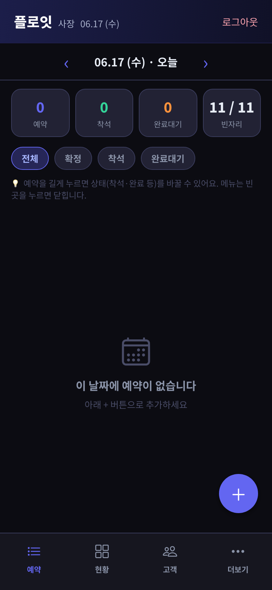

2026년 6월 16일 (화)
6일차 — 디자인 대공사, 진짜 앱 같아졌다
아이콘에 애니메이션에 모바일 탭바에 대시보드까지. 하루 만에 앱 인상이 확 달라진 날이에요. 커밋이 스무 개 넘게 쌓였어요.
이날은 작정하고 디자인만 손봤어요. 메뉴마다 어울리는 아이콘을 달고, 버튼을 누르면 살짝 눌리는 반응을 넣고, 로딩 중일 땐 빈자리가 은은하게 깜빡이게 했어요. 하나하나는 진짜 사소한데, 다 모아놓으니까 갑자기 '시중 앱' 같은 느낌이 나더라고요. 이 맛에 디자인 만지나 싶었어요.
폰에서 쓰기 편하게 화면 아래에 탭바도 달았어요. 예약·현황·고객·더보기, 이렇게 네 개요. 한 손으로 엄지만 움직여도 왔다 갔다 되니까 훨씬 편해졌어요. 오늘 예약이 어떻게 돌아가는지 한눈에 보는 대시보드도 만들고, 예약 줄을 옆으로 슥 밀면 빠른 메뉴가 뜨는 것도 넣었어요.
마지막으로 한글이 또렷하게 보이도록 전용 글꼴을 입혔어요. 식당 태블릿에서 글자가 흐리면 사장님이 잘못 보고 예약을 헷갈릴 수도 있으니까요. 설정 화면도 네모난 카드로 묶어서 한결 보기 좋게 정리했어요.
여기까지가 지금까지의 기록이에요. 6일 동안 느낀 건, 코딩을 몰라도 '이렇게 해줘 / 저건 이상해, 고쳐줘'를 꾸준히 주고받으면 이만큼 만들어진다는 거였어요. 거창한 재능이 아니라, 만들고 싶은 게 뭔지 또렷이 말할 수 있느냐가 더 중요하더라고요.


이날의 실제 작업 내역 (20건)
ca40013Apply Noto Sans KR on web for crisper Korean text23760ebCard-based settings: grouped boxes, 2-col tablet grid, bigger titles94c22ebShow phone number on kiosk identity when no namee809a2aRemove points tab; point-earning as full-screen popupe6ee6a2Move privacy consent into a popup on new-number earn204f0bfExpandable privacy consent + per-weekday break timede79d99Settings/staff in panel, idle presets, tap-to-close, help text4575cc8Touch-first settings, point-input rename, idle return, time pickerce5a7fcDisable text selection and copy/paste menus on web33ad852Long-press dropdown for status, fix floor table clipping76253e1Auto-refresh reservation views on any change2839737Add swipe quick-actions to reservation rows945b2acMobile bottom tab bar (예약/현황/고객/더보기)0c347a9Reservation dashboard + status filter + chip icons; floor occupancy summary2233ad8Light-theme readability: tokenize status colors, fix header textb20e5ffNative design pass 4: clearer dark palette, gradient header, glow, empty-state icons, + light theme toggle5a5a88fNative design pass 3: loading skeletons + card depthabfe905Native design pass 2: icons everywhere, press feedback, panel transition81b89f9Native design pass 1: vector icons (sidebar + mobile menu)9639311Staff via allowed-email list instead of invite codes